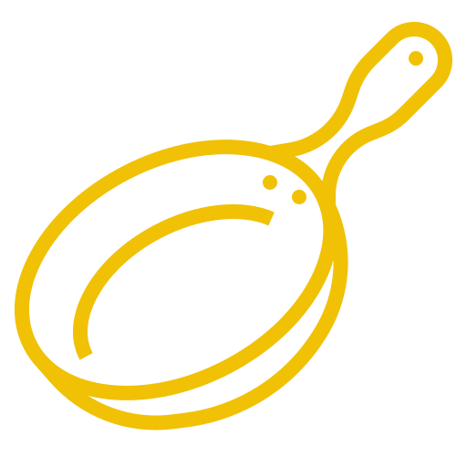

collaborative cooking platform
∙ user interface design for an app supporting collaborative cooking & recipe sharing
∙ group project
∙ sept 2020
overview
This is a group project I worked on while taking 05-392: Interaction Design Overview in Fall 2020.
The unit culminated in creating a screen-based collaboration product. Our group chose to focus on the areas of cooking & recipe sharing; our final product is an app that allows users to share and browse recipes, connect with like-minded individuals, and sign up for cooking classes.
During the project, we performed research to identify our target users' needs and pain points. With this data, we created an affinity diagram to map out our findings and draw conclusions about the next steps and any potential changes we needed to make to our product direction. From there, we wrote scenarios and drew storyboards, which served as the skeleton for our wireframes and prototype iterations. Finally, after iterating on our design, we conducted usability testing to determine the impact of our app on targeted users.
The entire app design was prototyped (lo, mid, and hi-fi) with Figma.
role
UI researcher, UI designer
skills
user research ∙ scenarios + storyboarding ∙ wireframing ∙ prototyping ∙ user interface design ∙ usability testing
tools
Figma
prototype
process book
final design: breakdown
We wanted to create a platform where people interested in cooking or baking could connect and collaborate with like-minded individuals. We knew that recipe-sharing platforms, image-sharing social media, and video-based cooking classes already existed, but we didn't know of any platform that combined all three. Thus, our idea was to combine them into one holistic platform for cooking aficionados.
who are we designing for?
Our target demographic is adults or older teens with access to video-calling technology and an interest in food.
what did we need to know?
What causes screen fatigue?
Does there exist a demand for group cooking?
What recipes are popular, and how do people prefer to browse recipes?
Are there potential copyright issues involving recipes?
Does cooking skill level affect the way people view, find, and use recipes?
Does age affect the way people view, find, and use recipes?
profile page
The profile pages (shown above) are simple, with only two tabs: one containing the user's creations, and another containing upcoming events. We intentionally left out a follower/following count to discourage unhealthy competition and instead encourage an atmosphere of collaboration and support.
discover page
We wanted this screen to have
organic structure, rather than
display images and videos in a
grid-like structure. This page is a personalized feed that allows users to explore new recipes.
calendar page
The calendar page allows users to view upcoming cooking classes; users can also filter their preferences based on ingredient, difficulty, and more. There is both a one-day view and a three-day view option here for increased accessibility.
registration page
The registration screen contains information on the cooking class, including a description, difficulty rating, and ingredients and tools lists.
Calendar page for viewing available cooking classes
Ability to filter events on the calendar
key research findings
After conducting interviews and observations, we compiled these findings. These findings helped influence our product direction:
Good communication (both verbal and non-verbal) is essential for successful collaborative cooking
Understanding recipes is a major challenge when it comes to cooking
Cooking habits and recipe preferences vary widely
Video-based cooking is not preferred, as it can get too noisy or distracting
Our affinity diagram with all research findings
made with ♥ by michelle zhang